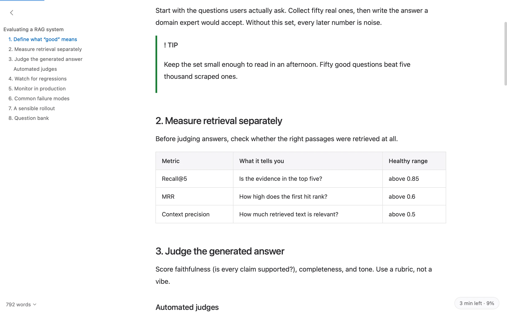
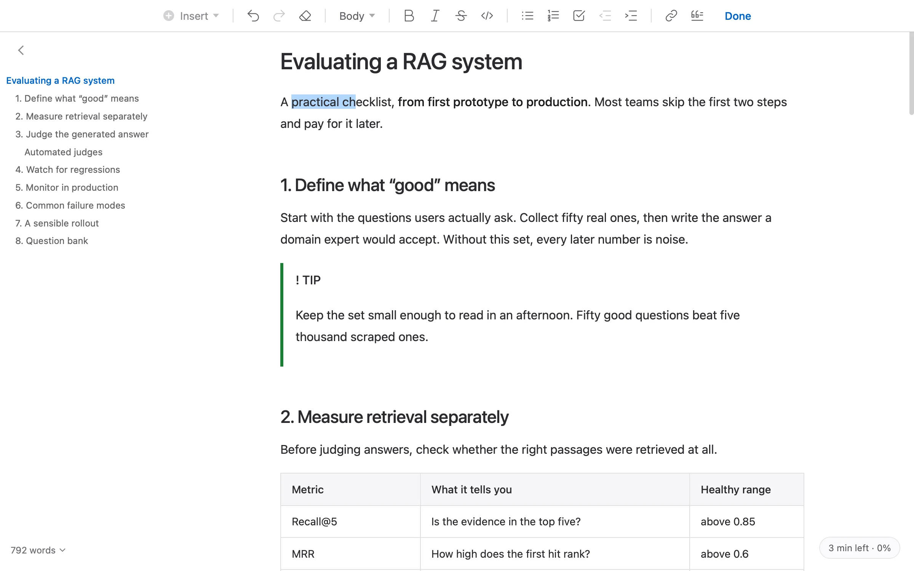

周末计划 · 写给自己
周末，慢一点。
一本书，一杯咖啡。从一顿好好吃的早餐开始。
周六 · 出门走走
逛书店，沿河散步。看到喜欢的风景，就停下来。
傍晚带一本新书回家，做一顿简单的晚饭。
周日 · 留一点空白
把时间留给真正喜欢的事。
mdPreview · 为 Mac 上的 .md 文件
Agent 交来的 Markdown，双击就能好好读。像 Word 一样直接改，离线可用，无需账号。

不是代码编辑器。不是知识库。
没有项目、导入、工作区。
只有你要看的那份文件。
把时间留给真正喜欢的事。
一本书，一杯咖啡。沿着河边走走，不用赶时间。
AI 写好的报告、Agent 存到桌面的计划，常常是一份 .md。你需要的，是打开它，好好读。
设为默认打开方式，双击就是排好版的正文。不必先启动软件，再找一遍文件。
不用账号，阅读和编辑都在本地完成。文档留在你的电脑里，不必先上传到哪里。
点正文，用工具条直接改。
想看源码？⌘E，随时切换。

改完，从 macOS「文件」菜单导出 PDF、Word 或网页文件，发给别人。
不需要。打开就能读，点击正文可以编辑，用工具条加粗、设标题、加列表。复杂内容也可以切到源码模式处理，但日常阅读和简单修改不用学习语法。
免费，也开源，采用 MIT 许可证。没有账号、订阅或广告。你可以在 GitHub 查看源码。
不会自动上传文档，也没有云同步或遥测。阅读、编辑和导出在本地完成。自动更新会联网检查并下载新版本，可以在设置中关闭；远程图片默认不加载，由你决定是否联网加载。主动分享或打开带远程图片的导出网页，是另外的操作。
目前发布配置不要求 Apple 公证，浏览器下载的安装包可能触发 macOS 的首次打开保护。确认来自本项目发布页后，可在「系统设置 → 隐私与安全性」中选择「仍要打开」。官方脚本保留签名与校验和验证；如果校验失败、设备管理策略或系统阻止安装，请停止，不要绕过限制。Agent 安装也不能保证系统放行，网页不会控制你的 Agent。
应用包含 Quick Look 扩展。在 Finder 中选中文件，按空格即可尝试预览。如果没有生效，可到「系统设置 → 通用 → 登录项与扩展 → 快速查看」检查 mdPreview 扩展是否启用。不同 macOS 版本的入口和兼容性可能不同，请以发布说明为准。